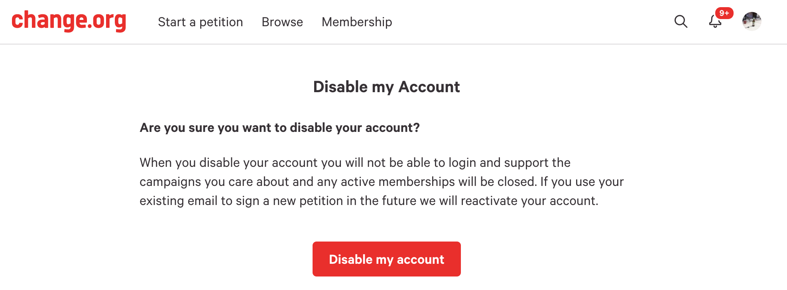
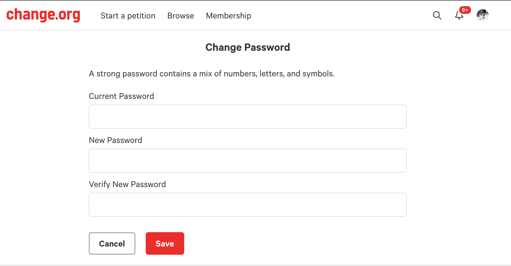
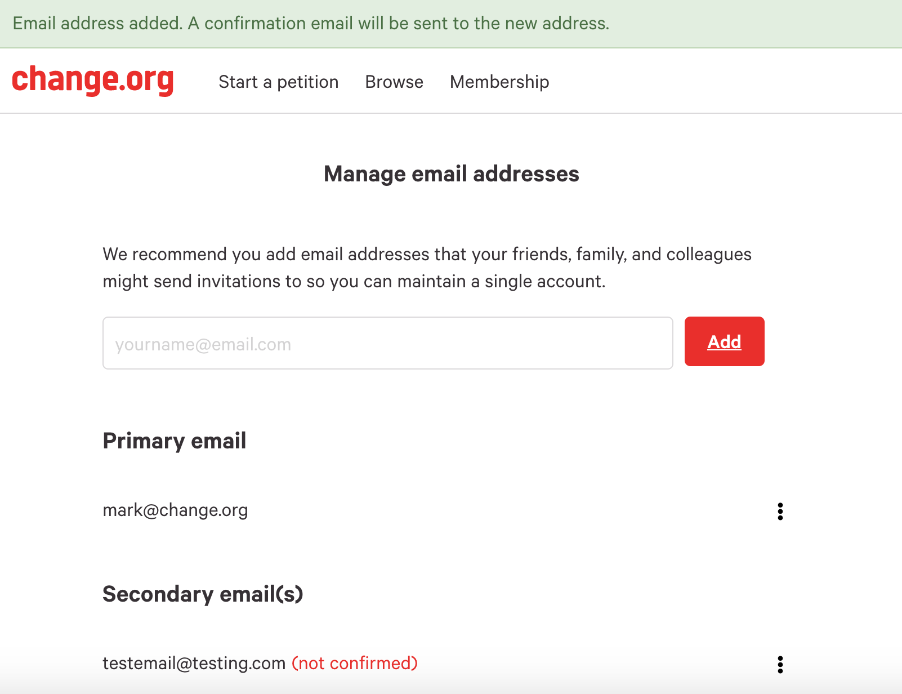

Shreyas Devalapurkar
I am a Software Engineering student in my final year at the University of Victoria. I am passionate about technology and enjoy continuous learning and development, from web technologies to playing the violin. I am a hard working, goal oriented perfectionist and I always do my best to deliver and produce exceptional results. I can write clean and functioning code and have great leadership and communication skills.
I have a lot of experience in working with a variety of web technologies. I have built many cross-platform mobile applications, websites, native mobile apps, and web APIs with popular technologies such as React, React Native, Redux, JavaScript, NodeJS, and Java.
Experience
Software Engineer Intern
 Change.org
Change.orgCurrently working with the Quality Petiton team on the world's largest social change platform.
Account Settings Pages
Transitioned many account settings pages of the site from a monolithic rails application to React.
Disable Account Page
Change Password Page
Manage Emails Page
Technologies used include:
- Javascript (ES6)
- Node
- React
- Rendr
- Backbone
- Ruby on Rails
Full Stack Developer Co-op
Worked as a Full Stack Developer on a web application, an open source Chrome extension, Google Adwords scripts, and on a Jira API script.
Statera (Web Application)
Added many features such as being able to handle and run reports on chatbot campaigns, adding a data reporting filter, and the ability to rotate out advertising keywords automatically to test out the performance of different keywords on a daily basis.
Jira Template Injector (Chrome Extension)
Added functionality to support the addition of custom input IDs to inject templates into the Jira Template Injector (JTI) open source project.
Open source code for the JTI: Jira Template Injector
Google Adwords Scripts
Wrote scripts for checking and notifying when actual CPA (cost per action) for an AdGroup is higher than the target CPA, checking for declining AdGroup performance, and finding anomalies within AdGroups.
Jira API Script
Wrote a script using Node.js to pull in data from the Jira API regarding the time logged by an individual towards all the tickets within a particular Jira project over a given date range.
Technologies used include:
- Python
- Flask
- JavaScript, HTML, CSS
- Postgres
- Redis
- Docker
- Node
Junior Software Developer Co-op
Worked as the primary developer for an internal proof of concept mobile application. The application was a consultant status reporting cross-platform mobile app built from scratch using React Native. The purpose of the application was to enable consultants to elegantly and efficiently report their weekly status and for management/career mentors to easily view this data.
The work completed throughout my work term paved the way for development using React and React Native within Online and in other client projects.
Technologies used include:
- React Native
- Redux
- Microsoft Azure, SQL Server, and Graph API
- Node and Express
- Android and iOS SDK
Summer Research Student
Worked as a summer research student under the supervision of a Ph.D. candidate performing experiments on a transcription factor named Scleraxis to determine its effects on Cardiac Fibrosis.
My contributions got my name on an abstract publication as a first author, and I was also awarded the James. S. McGoey Best Summer Student Award.
Link to publication: Scleraxis Abstract
Experiments performed include:
- Protein synthesis and western blotting
- DNA analysis and PCR (Polymerase chain reaction)
- Cell culture, proliferation and growth
Projects
Schedulearn
A web application a few friends and I built that tutors and students can use to interact with each other and easily schedule/manage all their lessons.
We started working on this app during the Hack UVic 2018 hackathon, sponsored by Major League Hacking and Github.
We have made a lot of progress since the hackathon and have now officially shipped the product! We are continuing to work on the app and are adding features to it.
Major tools used:
- Python
- Django
- SQLite
- JavaScript
- JQuery
- Bootstrap
- HTML
- CSS
Team Members and Contributions:
- Shreyas Devalapurkar: Frontend Developer
- Ahmed Siddiqui: Designer and Backend Developer
- Nisarg Patel: Frontend Developer
- Lee Zeitz: Backend Developer
- David Schriemer: UI/UX Designer and Developer
- John Schriemer: UX and UI Developer
Shiffany: My Battlesnake
Shiffany is the battlesnake I built for the 2018 battlesnake competition. She is a great partner and competitor :) You can see her as the pink snake as she triumphs in one of her battles in the video shown above.
Battlesnake is a yearly programming competition held in Victoria BC. Teams program web-based AIs for the classic arcade game Snake and the last snake slithering wins!
Link to the official Battlesnake website: Battlesnake
Link to the Battlesnake blog post for Shiffany and other Redbrick snakes: Blog post
Technologies used to build Shiffany:
- JavaScript
- Node
Algorithms used by Shiffany:
- Flood Fill: to identify open and safe areas of the game board
- A Star: to find an optimal and shortest path to food and my tail
Board Game Handbook

An Android mobile application I am working on that allows users to search for the rules of hundreds of board games. Enjoy games you will come to love, even if you don't know how to play!
Started working on the application at Hack UVic 2017 (Powered by Major League Hacking) and currently working on adding more games to the app, and functionality to purchase games through Amazon.
Major tools used:
- Java
- Android Studio
- Android SDK
GitHub Browser
A native iOS mobile application I built using React Native to allow users to browse their GitHub activity history such as pushes/commits to their repositories. Query the GitHub API to neatly display your commit history and search for other repositories.
Major tools used:
- JavaScript
- React Native
- Redux
- GitHub API
GPA Calculator
A hybrid mobile application that I built to allow users to enter their courses with a grade and credit hours and then calculate their GPA.
Major tools used:
- JavaScript
- HTML
- Ionic
Autonomous Waste Clean-Up Robot
An autonomous robot built to find and remove an object from a given area using IR sensors. The object was selected to be a metal bar, and the lifting mechanism was a simple magnet.
This project was completed as part of the ENGR 120: Design Course in first year engineering by Alex, Rickus, Tameem, and I.
Major tools used:
- VEX Robotics Kit
- Robot C
Conferences
StartupSlam 3.0
StartupSlam is the largest tech conference on Vancouver Island. Workshops were offered on startup engineering, early stage entrepreneurship, and product validation and design.
I attended various workshops and listened to speakers from across the globe.
Link to the official StartupSlam website: StartupSlam
Prairie Dev Con
Prairie Dev Con is an annual conference that takes place in Winnipeg, MB. It provides a high quality professional development opportunity for software developers and architects.
I attended various talks and presentations by renowned Microsoft MVPs, senior developers, and other passionate individuals.
Topics were web development, cloud-based platforms and strategies, and artificial intelligence.
Link to the official PDC website: Prairie Dev Con
Skills
Frontend Tools
Backend Tools
Mobile Dev Tools
Integration and Communication Tools
- Requirements Elicitation
- UI and UX - Responsive Design with focus on Human Computer Interaction
- Agile Development & Kanban
- Cross Platform Testing & Debugging
- Cross Functional Teams
- Continuous Integration
Articles
Occasionally I enjoy analyzing articles and writing my own blog posts regarding topics in and around the software industry.
- Article Analysis: Safety-Critical Software Engineering and Fault Tree Analysis
- Software Engineering Radio Podcast: LMAX Architecture
- Article Analysis: The Golden Age of Software Architecture
- Design Patterns: The Builder
- Challenges in Creating Exceptional Software Systems
The article I chose to analyze is titled, “Fault tree analysis for composite structural damages” published by the Journal of Aerospace Engineering in 2013. The purpose of this article is to “introduce a fault tree methodology to synthesize various damage modes of composite structures by identifying possible damage causes [1].” Fault tree analysis (FTA) was introduced by Bell Laboratories, and is a “method in system reliability, maintainability, and safety analysis [2].” FTA is a deductive process wherein combinations of failures that could cause undesired events are tested using a tree structure...
Link to the full article: Fault Tree Analysis
The Software Engineering Radio podcast I chose to analyze is titled, “Mike Barker on the LMAX Architecture” published by the IEEE Computer Society in 2016. Barker is a Research and Development programmer at the London Multi-asset Exchange (LMAX). In this podcast, Barker speaks about the LMAX Exchange system. He highlights the architecture, focusing on how the system works, the important non-functional requirements, and the components of the system...
Link to the full article: LMAX Architecture
The article I chose to analyze is titled, “The Golden Age of Software Architecture” published by the IEEE Software Journal in 2006. The purpose of this article is to “examine software architecture’s growth in the context of a technology maturation model [1].” The authors state that in the near future, “software architecture will be an essential part of software system building, and will be taken for granted just like all truly successful technologies [1]...”
Link to the full article: Golden Age of Software Architecture
The design pattern I chose to analyze in this article is the “Builder” pattern within the Java language. The builder pattern is used to create an object made up of other objects. It allows users to “separate the construction of a complex object so that the same construction process can create different representations [1].” This is useful when the user wants the creation of specific parts to be independent of the main object. The pattern allows a “client object to construct a complex object by specifying only its type and content, being shielded from the details related to the object’s representation [2]...”
Link to the full article: Builder Design Pattern
Software engineers around the world strive for excellence when it comes to creating software systems; however, this is not a simple task. Some of the major challenges faced in this process include requirements volatility, addressing quality attributes, and carrying out a well-established design process...
Link to the full article: Challenges in Building Software Systems
Interests
I enjoy playing the violin. I have been playing the violin for over 13 years. I perform at local cultural events such as the Raindance Festival, India Mela, and ICCA shows. I also teach violin lessons, so please don't hesitate to contact me if you are interested in learning.
I enjoy playing Basketball and Badminton. I have played on an intramural basketball team at UVic with my friends, and used to coach basketball at the grade 7/8 level. I have also been a Manitoba SCAC Provincial-Level badminton player.
I moved around a lot as a child, and thus love exploring new places. I have lived in Milwaukee (USA), Bern (Switzerland), Bangalore (India), and Winnipeg/Victoria (Canada). I have travelled to beautiful places such as Italy, Amsterdam, and Paris. I want to continue to explore the world and learn new things wherever I go.
I am a wine (mainly red wine, but also white wine) enthusiast, always trying to find the perfect combo for my meals.